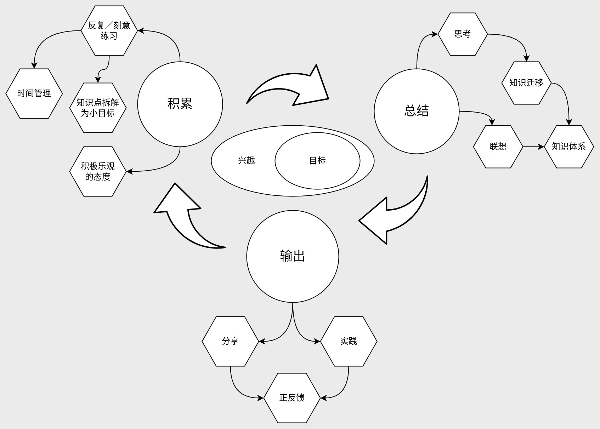

《考试脑科学：脑科学中的高效记忆法》读后感
从浏览这本书的过程中，发现它的方法与我目前的学习方法有共鸣，也触发了我对整理学习方法的冲动。
阅读这本书的初衷
最近在大量看一些资料，想看有没有高效的方法。
高效记忆法
- 我的理解是不存在所谓的高效记忆法，或者说学习的捷径。学习是个刻意的／反复练习的过程。
- 但确实存在一些能够提升效率的方法，不过很多也是废话或者显而易见的道理
- 拥有兴趣／目标；
- 持续地努力；
- 刻意输出，特别是结构化的数据帮助记忆和理解；
- 联想式学习，构建自己的知识体系；
这本书对我的影响
它肯定了我的学习方法，或者说帮助我梳理出了学习的框架，促使我想去整理这个框架，从而构建自己的知识体系。
我对学习这个事的理解
- 首先需要有兴趣，最好再确立个核心目标。
- 我把学习当成是以积累／总结／输出这三个环节构成的闭环，并以兴趣／目标为中心，不断循环往复的过程。
- 其中的积累环节，需要反复／刻意的练习，辅助上合理的时间管理／小目标／不怕失败的态度；
- 然后是总结，它需要学习者停下来思考知识间的联系，不断完善自己的知识体系结构，这本书也有提到知识迁移是人类独有的，依靠它快速学习各种知识；
- 最后是输出，可以分享／教授他人，也可以动手实践加深记忆，甚至做出成就得到正反馈；
- 最后也是开始，因为目标还未实现，或者总会再遇到问题。